Arancini di mozzarella
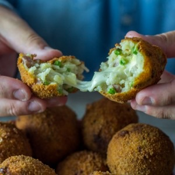
Voilà ENFIN la recette des boulettes de riz à la mozzarella que je vous avez montré en exclu sur facebook et instagram et vous avez été nombreux à me solliciter pour avoir la recette alors me voilà.
Très honnêtement je n’avais pas prévu de poster si rapidement cette recette mais c’était devenu une urgence! J’ai découvert les arancini (ou boulettes de riz si vous préférez) un soir en rentrant du travail. Mon chéri m’avait préparé une jolie surprise puisqu’il m’avait préparé le repas de A à Z (youhoooou) et il y avait au menu ces boulettes de riz fourrées la mozzarella dont je raffole depuis (sauf que maintenant c’est moi qui les fait à chaque fois^^)!!! Les arancini sont une spécialité de la cuisine sicilienne. Ces boulettes à base de riz sont généralement parfumées au safran, farcies de viande cuite dans de la sauce tomate et aussi de petits pois et de mozzarella. Pour la petite histoire, le terme d’arancini est dérivé d’arancia qui signifie l’orange (le fruit) en italien et c’est vrai qu’en regardant de près, les couleurs et la forme des arancini peuvent effectivement faire penser à une orange. Pour autant, ne soyez pas étonnés si en vous promenant du côté de l’Est de la Sicile vous en trouvez de forme conique qui eux ont leur forme inspirée du volcan tout proche : l’Etna!
Cette recette peut être aussi un très bon recyclage de restes de risotto (sauf que moi je peux toujours rêver pour qu’il y ait des restes ici…) et elle est aussi très rapide à faire. Ici mes arancini sont assez traditionnels puisque j’y ai mis des petits pois, de la mozzarella et du jambon! Pas de sauce tomate, de safran ni de viande bovine mais ce sera sans doute pour une prochaine fois! Moi qui adore la mozzarella je suis aux anges à chaque fois que j’ouvre un arancini en deux et que je vois le fromage fondu, s’effilocher un peu dans tous les sens (oui il m’en faut peu!!) et je suis sûre que cela vous fera presque le même effet si vous vous lancez dans cette recette 🙂
Je vous laisse découvrir mes petits arancini mozzarella petits pois et jambon et j’espère que vous ne serez pas déçus!!
Recette trouvée sur le livre de Lidia’s Favorite Recipes
Enregistrer
Ingrédients
- Huile d'olive
- Oignon - 1
- Riz (arborio de préférence) - 200g
- Dés de jambon - 250g
- Eau - 500ml
- Bouillon de poule - 1 cube
- Vin blanc - 100ml
- Petits pois - 150g
- Parmesan - 100g
- Mozzarella - 125g
- Persil
- Oeufs - 3
- Farine - (environ 140g)
- Chapelure - (environ 150g)
- Huile de friture
Instructions
- Dans une casserole, faire bouillir l'eau avec le cube de bouillon de poule
- Faire fondre les oignons dans une poêle (ou un faitout) avec de l'huile d'olive
- Ajouter les dés de jambon et mélanger
- Ajouter le riz et remuer jusqu'à ce qu'il soit translucide (environ 2 minutes)
- Verser le vin blanc
- Remuer jusqu'à ce que le vin soit totalement absorbé
- Verser le bouillon et couvrir à feu doux
- Laisser cuire pendant 18 minutes (varie selon le riz comptez entre 15 et 20 minutes)
- Sortir du feu et ajouter les petits pois
- Mélanger et laisser le mélange hors du feu 5 minutes
- Transvaser le tout dans un plat et laisser refroidir
- Une fois refroidi, ajouter le parmesan et le persil
- Mélanger
- Couper la mozzarella en carrés
- Préparer un saladier rempli d'eau sur votre plan de travail pour faciliter la formation des boules
- Préparer 3 bols: 1 bol de farine ; 1 bol avec les œufs battus à la fourchette ; 1 bol de chapelure
- Humidifiez-vous les mains
- Former une boule dans vos mains en écrasant plus ou moins le riz (boules de taille moyenne 8-10 com de diamètre environ)
- Enfoncer un doigt jusqu'au milieu de la boule
- Ajouter un (ou deux^^) morceau de mozzarella à l’intérieur
- Pour couvrir le trou ajouter un peu de riz qui se trouve dans le plat, couvrez le trou et reformer une boule
- Tremper la boule dans la farine
- Puis dans l’œuf
- Puis dans la chapelure
- Poser sur une plaque pendant que vous faites les autres (n'oubliez pas de vous humidifier les mains entre chaque boulette)
- Verser de l'huile dans un grand faitout et faites la chauffer
- Plonger les arancini
- Sortez-les à l'aide d'un écumoire quand ils commencent à dorer
- Posez les sur du papier absorbant
- A déguster immédiatement accompagné d'une bonne petite salade par exemple
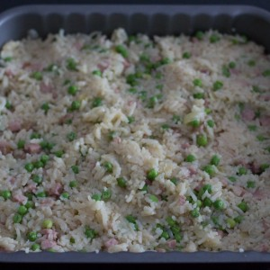
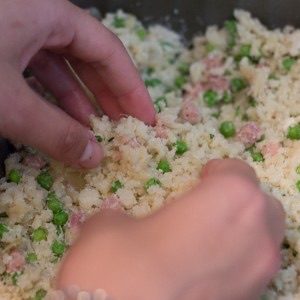
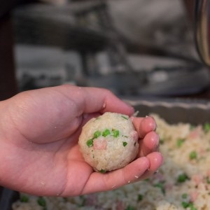
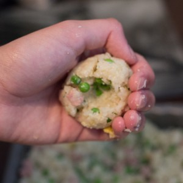
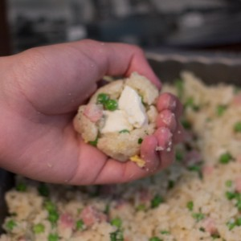
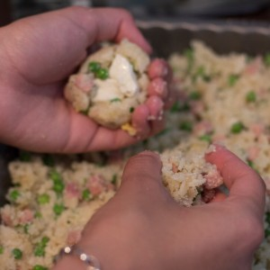
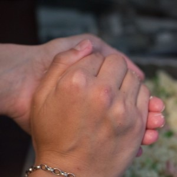
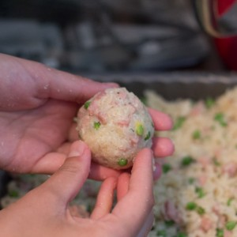
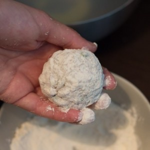
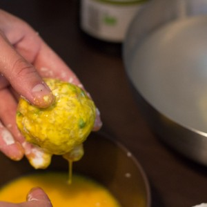
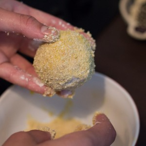
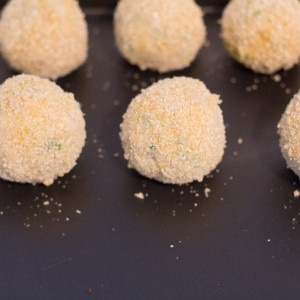
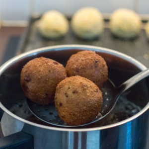
Les tips de la communauté
Très grand succès. Boulettes siciliennes adorées de tous. Le fondant de la mozzarella et l'ensemble des saveurs séduisent énormément. Plusieurs testeurs confirment que c'est une tuerie, y compris avec des substituts.
Astuces
- Utiliser du risotto comme base - élément crucial pour la texture
- Fondant de la mozzarella à l'intérieur est le point fort
- Faire des boulettes plus grosses fonctionne aussi bien
- Se réchauffent bien (chaud, tiède ou froid)
- Essayer avec du cheddar pour variante au fromage
- Sans friteuse, c'est très facile à la poêle avec huile
Variantes suggérées
- Remplacer le jambon par des champignons pour version végétarienne
- Tester avec du Cheddar à la place de la mozzarella
- Essayer la Vache qui rit à la place de mozzarella
- Version sucrée avec chocolat (traditionnelle sicilienne)
- Faire des mini arancini pour apéritif
Ajustements signalés
- Omission du vin blanc : utiliser seulement le bouillon, sera aussi bon
- Possibilité d'utiliser sans parmesan mais résultat moins garanti
- Panure : 100g farine + 100g chapelure + 2 oeufs suffisent largement